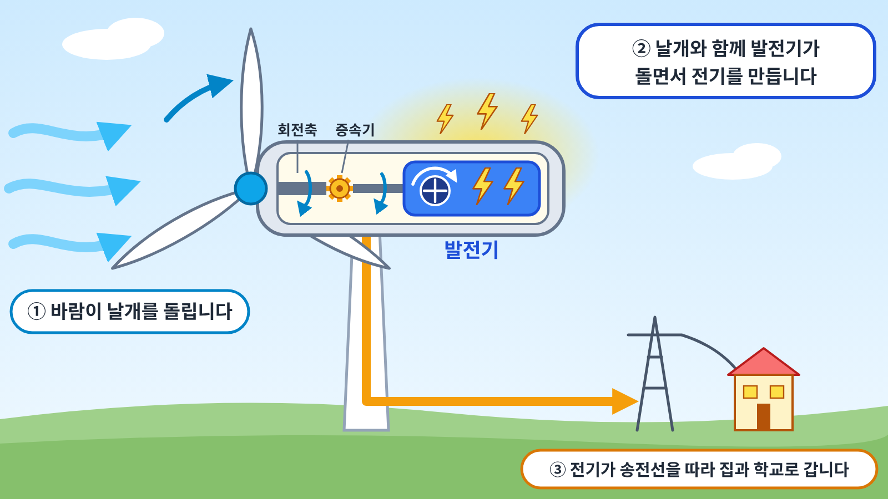

1풍력 발전은 무엇일까요?
풍력은 바람이 가진 힘을 말합니다. 풍력 발전은 바람의 힘으로 커다란 날개를 회전시켜 전기를 만드는 방법입니다.
풍력 발전기는 바람이 강하고 꾸준히 부는 곳에 세웁니다. 우리나라에서는 강원도의 높은 산이나 제주도처럼 바람이 많이 부는 곳에 풍력 발전기가 있습니다. 최근에는 바다 위에 풍력 발전기를 세우는 해상 풍력도 늘어나고 있습니다. 2017년 제주도 한경면 앞바다에는 우리나라 최초의 상업용 해상 풍력 발전 단지가 완공되었고, 이곳에는 풍력 발전기 10기가 서 있습니다.
2바람으로 어떻게 전기를 만들까요?
풍력 발전기는 높은 기둥, 기둥 꼭대기의 몸체, 몸체에 달린 커다란 날개로 이루어져 있습니다. 날개 하나의 길이는 수십 미터에 이릅니다.

바람이 불면 날개가 회전합니다. 날개는 몸체 안의 회전축과 연결되어 있어, 날개가 돌면 회전축도 함께 돕니다. 날개는 천천히 돌기 때문에, 몸체 안의 증속기가 회전 속도를 빠르게 높여 줍니다. 빠르게 회전하는 힘이 발전기에 전달되면 전기가 생산됩니다. 즉 풍력 발전기의 날개는 터빈의 역할을 합니다. 생산된 전기는 송전선을 거쳐 가정과 학교로 공급됩니다. 풍력 발전기는 초속 3m 정도의 약한 바람에도 돌기 시작하며, 바람이 셀수록 더 많은 전기를 만듭니다.
3풍력 발전의 좋은 점은 무엇일까요?
풍력 발전은 연료가 필요하지 않습니다. 바람은 돈을 내지 않고 얻을 수 있으며, 사라지지 않습니다. 전기를 만드는 과정에서 이산화탄소나 대기 오염 물질을 배출하지 않습니다. 바다 위에 세운 해상 풍력 발전기는 바다 밑에 박힌 구조물이 물고기가 모여 사는 장소가 되기도 합니다.
4풍력 발전에서 생각해 볼 점은 무엇일까요?
바람은 항상 일정하게 불지 않기 때문에 발전량이 날마다, 계절마다 크게 달라집니다. 그래서 바람이 약할 때를 대비한 다른 발전 방법이나 전기를 저장하는 장치가 함께 필요합니다. 풍력 발전기는 바람이 많이 부는 곳에만 세울 수 있어 설치 장소가 제한됩니다. 또한 날개가 돌 때 나는 소음, 날아가던 새가 날개에 부딪히는 문제, 자연 경관이 바뀌는 문제 때문에 주변 주민들이 설치를 반대하기도 합니다. 현재 우리나라에서 풍력으로 만드는 전기는 전체 전기의 1%가 되지 않습니다.